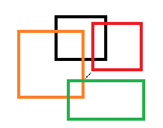
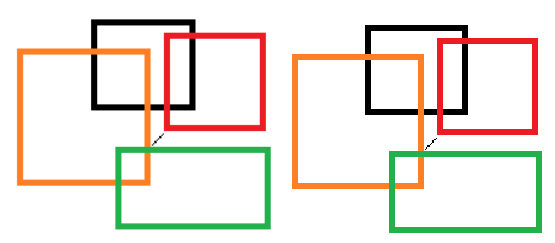

Tenzen wrote:
well, it will always do that when you zoom in.. no matter how big you make it, since you are essentially adding information which isnt there.. unless you make a vector graphic, which doesnt have that limitation..
a bit silly for a start menu orb though
No, no, no, no, first of all, I did that zoom in to show you guys that the image has this semi-tone around each different square, and THAT shouldn't be there, cause that's what's causing the blurry effect. Basically, you have to use JUST 4 colors: Red, Green, Blue and Yellow. The image should only have 1 tone per color. BUT, to smooth the upper and lower sides, you have to use those different tones, so it doesn't look jagged.
Just look at the Microsoft original logo that I put in this post, it has only 1 color, 1 tone: white, but, to smooth the upper and lower sides, it includes some different tones there.
Second, when you zoom in, you're not adding information to the images, it all depends in what program you're using. For example, when I zoomed in the screenshot with photoshop, I didn't add any information to the photo, as you can see. When you zoom in an image, the image is being upscaled, and, if no filter is applied, it should look worse, distorted, not proportional, unless you use an integer zoom: x2 zoom, x3 zoom... There are some programs that add filters when you zoom in the image, so it looks smoother. Look here:

That image is 266x210, and it's perfectly sharp (notice that when I upload the photo, it loses some quality, but the black center line should be squares)
Now, If I zoom in the photo, somewhere between x1 and x2, you get this:

The left photo is zoomed in with Photoshop. Well, this program automatically applies an AA filter or something like that if you're zooming in less than x2, so the photo looks proportional and nice. The right photo is zoomed in with Windows Photo Viewer, which DOES NOT apply any filter. Again, as the server I uploaded the photos applies a filter, it is not as sharp as it should be, but the right photo is sharp as hell, but doesn't look proportional, and it's deformed as the zoom is not an integer.
So, both are working with the same image, both are zooming in the very same image, but Photoshop is "making up" some pixels, and W Photo Viewer no, it's just upscaling, and when you use a decimal zoom in, you get that.
I know the size I posted is not going to fix it, indeed, that's what I'm trying to explain here. I just zoomed in the icon so you can see the semi-tone color in the borders, that shouldn't be there.
To sum up, could you remove those semitone colors?
http://fotos.subefotos.com/4febe4be9094 ... b8504o.pngFor better quality:
https://mega.co.nz/#!AUBmka7K!LC25fIYwm ... eFl3qfRJvU


{kind=link}
{kind=link}
{kind=link}